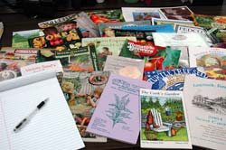

Best Garden Seed Companies
Here are some of our favorite garden seed companies from around the country.
By Tabitha Alterman
Nov. 30, 2007
Whether your garden is frozen over or your first freeze is yet to arrive, it's never too early to start dreaming about next year's garden. If you set aside a little time this winter to plan what to grow next year, you'll be rewarded with an early start come spring. Plus, you can make your green thumb even greener just by reading seed catalogs. New gardeners, especially, should read seed catalogs to learn about fruit and veggie varieties that are naturally pest- and disease-resistant, are fabulously prolific, or offer superior flavor and nutrition. It's also a good way to introduce yourself to underappreciated but fun-to-grow fruits and veggies such as kohlrabi and mouse melons.
Lucky for us, it's easier than ever to find healthy garden seeds that were grown organically and come from solid, open-pollinated stock. Even some of the largest seed companies are beginning to offer a wider selection of organic, non-hybrid, and non-chemically-treated seeds. When possible, order garden seeds from companies based in your area. Their varieties are more likely to be well adapted to your soil and climate. The following seed companies (organized by state; skip to the end for Canadian listings) have a great selection of open-pollinated and organic vegetable and herb seeds, and you'll learn a lot from their informative catalogs. Their extensive offerings are available online and/or via traditional print catalogs. For help finding even more seed sources, check out our handy tool, the customized Seed and Plant Finder.
Seed Companies By State
ALABAMA
Sand Mountain Herbs (Fyffe, Ala.)
ARIZONA
Native Seeds / SEARCH (Tucson, Ariz.)
Seeds Trust (Cornville, Ariz.)
CALIFORNIA
Bountiful Gardens (Willits, Calif.)
J. L. Hudson, Seedsman (LaHonda, Calif.)
Laurel's Heirloom Tomato Plants (Lomita, Calif.)
Mountain Valley Growers (Squaw Valley, Calif.)
Natural Gardening Co. (Petaluma, Calif.)
Ornamental Edibles (San Jose, Calif.)
Peaceful Valley Farm Supply (Grass Valley, Calif.)
Redwood City Seeds (Redwood City, Calif.)
Renee's Garden (Felton, Calif.)
COLORADO
Botanical Interests (Broomfield, Colo.)
Golden Harvest Organics (Fort Collins, Colo.)
The Garlic Store (Fort Collins, Colo.)
CONNECTICUT
Comstock, Ferre & Co. (Wethersfield, Conn.)
John Sheeper's Kitchen Garden Seeds (Bantam, Conn.)
New England Seed (Hartford, Conn.)
FLORIDA
Eden Organic Nursery Services (E.O.N.S.) (Hallandale, Fla.)
The Gourmet Gardener (Live Oak, Fla.)
The Pepper Gal (Ft. Lauderdale, Fla.)
Tomato Growers Supply Co. (Fort Myers, Fla.)
ILLINOIS
American Organic Seed & Grain (Warren, Ill.)
Underwood Gardens (Woodstock, Ill.)
INDIANA
Great Harvest Organics (Atlanta, Ind.)
The Chile Woman (Bloomington, Ind.)
IOWA
Blue River Organic Seed (Kelley, Iowa)
Mark Seed Co. (Perry, Iowa)
Sand Hill Preservation Center (Calamus, Iowa)
Seed Savers Exchange (Decorah, Iowa)
KANSAS
Pendleton's Country Market (Lawrence, Kan.)
Skyfire Garden Seeds (Kanopolis, Kan.)
KENTUCKY
Ferry-Morse Seed Company (Fulton, Ky.)
Sustainable Mountain Agriculture Center (Berea, Ky.)
MAINE
FEDCO Seeds (Waterville, Maine)
Johnny's Selected Seeds (Winslow, Maine)
Pinetree Garden Seeds (New Gloucester, Maine)
Wood Prairie Farm (Bridgewater, Maine)
MARYLAND
Pepper Joe's (Timonium, Md.)
MICHIGAN
Krohne Plant Farms, Inc. (Hartford, Mich.)
MINNESOTA
Albert Lea Seed House (Albert Lea, Minn.)
MISSOURI
Baker Creek Heirloom Seeds (Mansfield, Mo.)
Granny's Heirloom Seeds (Humansville, Mo.)
Pantry Garden Herbs (Cleveland, Mo.)
NEW HAMPSHIRE
G & H Garlic Farm (Littleton, N. H.)
NEW JERSEY
Thompson & Morgan (Jackson, N.J.)
NEW MEXICO
Gourmet Seed International (Tatum, N.M.)
Plants of the Southwest (Santa Fe and Albuquerque, N.M.)
Seeds of Change (Santa Fe, N.M.)
Seeds West Garden Seeds (Albuquerque, N.M.)
NEW YORK
Harris Seeds (Rochester, N.Y.)
Seedway (Hall, N.Y.)
Stokes Seeds Inc. (Buffalo, N.Y.)
Turtle Tree Seed (Copake, N.Y.)
NORTH CAROLINA
Appalachian Seeds (Flat Rock, N.C.)
Cornerstone Garlic Farm (Reidsville, N. C.)
OHIO
Bobba-Mike's Garlic Farm (Orrville, Ohio)
OREGON
Abundant Life Seeds (Saginaw, Ore.)
Horizon Herbs (Williams, Ore.)
Nichols Garden Nursery (Albany, Ore.)
One Green World (Molalla, Ore.)
Sow Organic Seed (Williams, Ore.)
Territorial Seed Co. (Cottage Grove, Ore.)
The Thyme Garden Herb Company (Alsea, Ore.)
Victory Seed Company (Molalla, Ore.)
Wild Garden Seed (Philomath, Ore.)
PENNSYLVANIA
Container Seeds (Wellsboro, Penn.)
Heirloom Seeds (W. Elizabeth, Penn.)
The Cook's Garden (Warminster, Penn.)
W. Atlee Burpee Co.(Warminster, Penn.)
SOUTH CAROLINA
Park Seed Co. (Greenwood, S.C.)
R. H. Shumway's (Graniteville, S.C.)
Seeds for the South (Graniteville, S.C.)
TENNESSEE
Marianna's Heirloom Seeds (Dickson, Tenn.)
New Hope Seed Company (Bon Aqua, Tenn.)
TEXAS
Garden Store-N-More (LaPorte, Tex.)
Willhite Seed Inc. (Poolville, Tex.)
Bob Wells Nursery (Lindale, Tex.)
Brown's Omaha Plant Farms (Omaha, Tex.)
Dixondale Farms (Carrizo Springs, Tex.)
VERMONT
High Mowing Organic Seeds (Wolcott, Vt.)
VIRGINIA
Garden Medicinals and Culinaries (Earlysville, Va.)
Southern Exposure Seed Exchange (Mineral, Va.)
WASHINGTON
Filaree Farm (Okanogan, Wash.)
Garden City Seeds (Ellensburg, Wash.)
Osborne Seed Company (Mount Vernon, Wash.)
WISCONSIN
Botanikka Seeds (Iron Ridge, Wis.)
Totally Tomatoes (Randolf, Wis.)
Vermont Bean Seed Co. (Randolph, Wis.)
Seed Companies in Canada
Boundary Garlic Farm (Midway, British Columbia)
Gardeners Web (Bowden, Alberta)
Hole's Greenhouses & Gardens (St. Albert, Alberta)
Salt Spring Seeds (Salt Spring Island, British Columbia)
Stellar Seeds (Sorrento, British Columbia)
West Coast Seeds (Delta, British Columbia)
William Dam Seeds (Dundas, Ontario)
Richter's (Goodwood, Ontario)
For more help planning your spring garden, check out the following articles from the Mother Earth News Archive:
- How to Organize a Seed Swap
- What to Do in Winter
- Finding Great Garden Seeds
- Plan for the New Year
- Seed Catalogs
- Use One of These 4 Simple Garden Designs to Grow the 12 Best Kitchen Herbs
- 8 Strategies for Better Garden Soil
Do you order seeds from a great seed company that isn't on the list above? Tell us about it below!
|
 PEYTON BALDWIN You can learn lot about gardening by reading seed catalogs. The online versions of seed company catalogs are quick and easy to use. Plus, they tend to be more up-to-date. |
 PEYTON BALDWIN You can learn lot about gardening by reading seed catalogs. The online versions of seed company catalogs are quick and easy to use. Plus, they tend to be more up-to-date. |
|